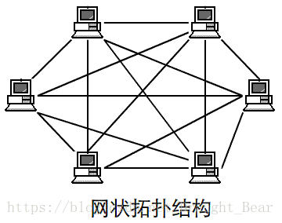

总线型：
总线拓扑结构所有设备连接到一条连接介质上。总线结构所需要的电缆数量少，线缆长度短，易于布线和维护。多个结点共用一条传输信道，信道利用率高。但不找诊断故障。
星型：
星型拓扑结构是一个中心，多个分节点。它结构简单，连接方便，管理和维护都相对容易，而且扩展性强。网络延迟时间较小，传输误差低。中心无故障，一般网络没问题。中心故障，网络就出问题，同时共享能力差，通信线路利用率不高。
环状：
环形拓扑结构是节点形成一个闭合环。工作站少，节约设备。当然，这样就导致一个节点出问题，网络就会出问题，而且不好诊断故障。
树型：
树形拓扑结构从总线拓扑演变而来。形状像一棵倒置的树,顶端是树根，树根以下带分支，每个分支还可再带子分支，树根接收各站点发送的数据，然后再广播发送到全网。好扩展，容易诊断错误，但对根部要求高。
网状：
网形拓扑结构是应用最广泛的，它的优点是不受瓶颈问题和失效问题的影响，一旦线路出问题，可以做其他线路，但太复杂，成本高。